컴퓨터활용능력-1급 (2003-02-09 기출문제)
1과목: 컴퓨터 일반
1. 컴퓨터에서 바이오스 롬(BIOS ROM)을 새 버전으로 업그레이드할 때 롬 칩을 교환하지 않고 사용자가 바이오스 업데이트용 소프트웨어를 이용하여 편리하게 업그레이드하기 위한 롬은?
- mask ROM
- PROM
- EPROM
- EEPROM
(정답률: 67%)

2. 인터넷 기술을 이용하여 기업 내부의 업무를 해결하려는 네트워크 환경으로, 인터넷과 동일한 TCP/IP 프로토콜을 사용한 LAN 기반 네트워크를 무엇이라고 하는가?
- 원거리통신망(WAN)
- 인트라넷(Intranet)
- 부가가치통신망(VAN)
- MAN(Metropolitan Area Network)
(정답률: 75%)
3. 다음 중 시스템의 최적화와 관련된 설명으로 잘못된 것은?
- 드라이브 변환기를 이용하여 FAT16은 FAT32로 바꾼다.
- 주기적으로 디스크 정리를 이용하여 선택한 디스크의 임시 인터넷파일이나 다운로드한 프로그램 파일 등은 비워 빈 공간을 유지한다.
- 디스크 속도가 예전보다 느려지면 디스크 조각 모음을 실행하여 디스크 최적화를 유지한다.
- FAT32는 FAT16이라는 파일 시스템보다 시스템 안전성이 향상되나 하드디스크의 공간 낭비를 초래한다.
(정답률: 75%)
4. 다음 중 아날로그 신호와 디지털 신호에 대한 설명으로 잘못된 것은?
- 범용컴퓨터는 아날로그 신호를 취급하기 때문에 정밀도가 제한적이다.
- 아날로그 신호는 시간에 따라 크기가 연속적으로 변하는 정보를 말한다.
- 디지털 신호는 시간에 따라 이산적으로 변하는 정보를 말한다.
- 아날로그 신호는 연속된 곡선 그래프로 표현할 수 있다.
(정답률: 71%)
5. 다음 중 정보통신망 용어 설명과 거리가 먼 것은?
- B-ISDN : 광대역종합정보통신망으로서 일반 가정까지 광케이블을 부설하는 것을 최우선과제로 삼고 있어 인터넷 및 멀티미디어 서비스를 조기에 정착시킬 수 있는 방식이다.
- VDSL : 초고속디지털가입자회선의 약자로 초고속 인터넷 서비스의 일종이며 다운로드와 업로드 속도가 빨라 대용량 파일을 주고받거나 고화질 동영상 콘텐츠를 즐기는데 적합하다.
- WLL : 거리가 아주 먼 지역의 가입자를 위해 기존의 유선 전화망을 이용하여 고속의 데이터 및 팩스와 같은 새로운 서비스를 제공하는 서비스이다.
- VoIP : 컴퓨터 네트워크상에서 음성 데이터를 IP 데이터 패킷으로 변환하여 전화 통화와 같이 음성 통화를 가능케 해 주는 기술이다.
(정답률: 64%)
6. 다음 중 한글 윈도우 98의 글꼴에 대한 설명으로 잘못된 것은? (단, 윈도우 98은 c:\Windows에 설치된 것으로 가정한다.)
- 글꼴 추가시 새로운 글꼴 파일들을 C:\Windows\Fonts 폴더에 복사하기만 하면 된다.
- 추가할 글꼴 파일들은 반드시 C:\Windows\Fonts 폴더에 존재해야 한다.
- 설치된 글꼴을 삭제할 때에는 C:\Windows\Fonts 폴더에서 삭제할 글꼴을 선택한 다음 삭제하면 된다.
- 글꼴을 추가하려면 제어판에서 글꼴을 더블 클릭한 다음 파일 메뉴에서 새 글꼴 설치를 선택한 다음 글꼴을 추가한다.
(정답률: 55%)
7. 다음 중 윈도우의 속도를 느리게 하는 원인이 아닌 것은?
- 윈도우의 레지스트리 정보가 많아졌다.
- 가상메모리가 부족하다.
- 윈도우 디렉토리에 DLL, DRV 등의 파일이 많아졌다.
- 하드디스크의 단편화가 심화되었다.
(정답률: 41%)
8. 다음 중 주기억장치에 대한 설명으로 올바르지 않은 것은?
- 주기억장치의 데이터에 대한 접근 시간은 데이터의 주소 위치에 따라 다르다.
- 주기억장치의 각 위치는 주소에 의해서 식별된다.
- 주기억장치는 중앙처리장치에서 연산할 명령과 데이터 및 그 결과를 저장하는 곳이다.
- 주기억장치에는 쓰지 못하는 읽기 전용 기억장치도 있다.
(정답률: 41%)
9. 프로세서의 설계 방식인 CISC(Complex Instruction Set Computer)방식과 RISC(Reduced Instruction Set Computer)에 대한 설명으로 가장 거리가 먼 것은?
- CISC는 RISC에 비교해서 전력소모가 많으며 처리속도가 느리다.
- RISC는 CISC에 비교해서 명령어의 종류가 많다.
- CISC는 RISC에 비교해서 설계가 복잡하며 가격이 비싸다.
- RISC는 CISC에 비교해서 명령어는 적으나 고성능 워크스테이션에 이용되고 있다.
(정답률: 58%)
10. 다음의 장치 중에서 서로 다른 네트워크 간에 자료가 전송될 최적의 길을 찾아주는 역할을 해 주는 장치는 ?
- 반복기(repeater)
- 허브(hub)
- 라우터(router)
- LAN카드
(정답률: 74%)
11. 한글 Windows 98에서 마우스 포인터를 숫자 키패드로 움직이기 위해서는 어떤 항목의 설정을 변경하여야 하는가?
- [시작] - [설정] - [제어판] - [내게 필요한 옵션]
- [시작] - [설정] - [제어판] - [마우스]
- [시작] - [설정] - [제어판] - [키보드]
- [시작] - [설정] - [제어판] - [디스플레이]
(정답률: 61%)
12. 다음의 설명과 관련된 인터넷 서비스는?
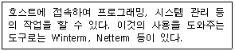
- FTP
- Gopher
- Telnet
- WAIS
(정답률: 57%)
13. 자체적인 데이터베이스를 구축하지 않고 다른 검색엔진에 검색을 요청해서 나온 결과를 종합하여 보여주는 검색엔진은?
- 단순 검색엔진
- 키워드 검색엔진
- 메뉴 검색엔진
- 메타 검색엔진
(정답률: 65%)
14. 3일전에 작성한 문서파일의 이름도 기억나지 않고 어디에 있는지도 모르는 경우에 찾을 수 있는 유용한 찾기 방법은?
- 이름 및 위치
- 날짜
- 고급
- 포함하는 문자열
(정답률: 78%)
15. 동영상의 압축 표준안 중에서 IMT-2000 멀티미디어 서비스, 차세대 대화형 인터넷방송의 핵심 압축방식으로 비디오/오디오를 압축하기 위한 표준안은?
- MPEG1
- MPEG2
- MPEG4
- MPEG7
(정답률: 64%)
16. 다음 중 한글 Windows 98의 [제어판]-[네트워크]에서 할 수 있는 일이 아닌 것은?
- LAN 카드의 인터럽트와 입출력 범위를 설정할 수 있다.
- 파일 및 프린터를 다른 사용자와 공유할 수 있도록 설정할 수 있다.
- 다른 사람이 자신의 컴퓨터를 알아볼 수 있도록 컴퓨터 이름을 지정할 수 있다.
- 각 공유자원에 암호를 지정하거나, 공유자원을 액세스할 수 있는 사용자를 지정할 수 있게 설정한다.
(정답률: 52%)
17. 인터넷 서비스에 대한 설명으로 바르지 않은 것은?
- Gopher : 메뉴 방식의 종합정보 검색 서비스
- WAIS(Wide-Area information Service) : 여러 곳에 분산된 데이터베이스로부터 정보를 검색할 수 있는 서비스
- IRC(Internet Relay Chat) : 인터넷을 통해 채팅을 할 수 있도록 하는 서비스
- PING(Packet Internet Gopher) : 원격 컴퓨터의 사용자 정보를 알아보기 위해 사용되는 서비스
(정답률: 68%)
18. 다음 중 멀티미디어 소프트웨어에 대한 설명으로 옳은 것은?
- AVI : 개인용 컴퓨터에서 동화상을 재생하는 파일 형식
- MPEG : 동영상만을 압축하며 소리는 압축하지 않는 기술
- DVD : 디지털 압축 기술로 670MB의 정보 저장
- JPEG : 동영상의 디지털 압축 기술
(정답률: 59%)
19. 다음 중 FTP를 이용하여 다양한 형태의 파일을 받고자 할 때, 사용자가 지정할 필요가 없는 것은?
- 서버의 주소
- 파일 전송 방식(file mode)
- 전송받을 파일의 이름
- 전송받을 파일의 크기
(정답률: 66%)
20. 아래 그림은 한글 Windows 98의 시스템 메뉴에서 장치관리자 탭의 내용을 나타낸 것이다. 이에 대한 설명으로 옳지 않은 것은?
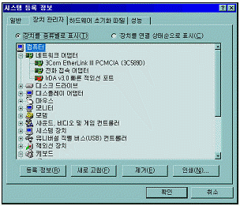
- 시스템에 설치된 하드웨어 목록을 보여주며 하드웨어에 관한 다양한 설정을 할 수 있다.
- 노란색 느낌표(!)로 표시된 것은 업데이트 되었다는 것을 의미한다.
- 문제가 있거나 불필요한 하드웨어 장치는 제거 버튼을 눌러 목록에서 없앨 수 있다.
- 해당 하드웨어의 등록정보에서 최적의 장치 구동 드라이버로 업데이트할 수 있다.
(정답률: 74%)
2과목: 스프레드시트 일반
21. 다음 중 작성된 매크로를 모든 통합 문서에서 실행할 수 있도록 하는 방법으로 옳은 것은?
- XLStart 디렉토리에 임의의 이름으로 저장한다.
- 임의의 디렉토리에 Personal.xls로 저장한다.
- XLStart 디렉토리에 Personal.xls로 저장한다.
- 임의의 디렉토리에 book.xls로 저장한다.
(정답률: 61%)
22. 셀에 데이터를 입력하던 중 [Alt]+[Enter] 키를 누르면 어떻게 되는가?
- 다음 입력할 셀로 이동된다.
- 데이터가 삭제된다.
- 같은 셀 내에서 줄 바꿈이 된다.
- 아무 일도 일어나지 않는다.
(정답률: 76%)
23. 메뉴 표시줄에 “나의 메뉴”라는 메뉴를 추가하려고 할 때 의 방법으로 옳지 않은 것은?
- 메뉴 표시줄에서 마우스 오른쪽 단추를 눌러 사용자 정의를 클릭하여 명령 탭에서 “새 메뉴”를 드래그 하여 메뉴 표시줄에서 드롭한다.
- 메뉴 표시줄에서 마우스 오른쪽 단추를 눌러 컨트롤 도구 상자를 클릭하여 디자인 모드를 클릭한다.
- 메뉴 표시줄의 [도구]-[사용자 정의]를 클릭하여 명령 탭에서 “새 메뉴”를 드래그 하여 메뉴 표시줄에서 드롭한다.
- 메뉴 표시줄의 [보기]-[도구 모음]-[사용자 정의]를 클릭하여 명령 탭에서 “새 메뉴”를 드래그 하여 메뉴 표시줄에서 드롭한다.
(정답률: 59%)
24. 동일문서(파일)내에 있는 2000년 시트의 A3 셀 값과 2001년 시트의 A3 셀 값의 합을 SUM 함수를 이용하여 합계 시트의 A3 셀에 계산하였을 때, 표시되는 올바른 계산식은?
- =SUM(2000년:2001년!A3)
- =SUM(2000년!:2001년!A3)
- SUM(2000년:2001년!A3)
- SUM(2000년!A3:2001년!A3)
(정답률: 56%)
25. 워크시트의 특정 셀에 수식 “=C8/$D5”을 입력할 때 $를 S로 잘못 입력하여 오류가 발생하였다. 이때 해당 셀에 나타나는 오류 메시지는?
- #N/A
- #NAME?
- #NULL!
- #VALUE!
(정답률: 51%)
26. 다음은 [데이터]-[부분합]의 대화상자이다. "사용할 함수"에서 구할 수 없는 함수는?
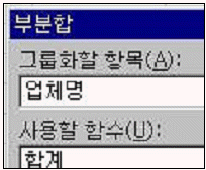
- 지수
- 분산
- 곱
- 합계
(정답률: 57%)
27. 연이율 5%로 3년 만기저축을 매월 초 50,000원씩 저축, 복리 이자율로 계산하여 만기에 찾을 수 있는 금액을 구하기 위한 수식으로 적당한 것은?
- =FV(5%,3,-50000,,1)
- =FV(5%,3,-50000)
- =FV(5%/12,3*12,-50000,,1)
- =FV(5%/12,3*12,-50000)
(정답률: 59%)
28. 다음은 데이터베이스를 이용하여 작성한 피벗 테이블의 결과이다. (가)의 결과를 (나)로 바꾸기 위해 매출액 데이터필드의 [필드설정]에서 [옵션]을 선택한 후 어떤 계산 종류를 선택하여야 하는가?
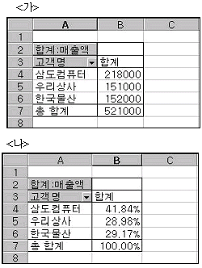
- [기준값]에 대한 비율
- 행 방향의 비율
- 열 방향의 비율
- 누계
(정답률: 41%)
29. 아래와 같이 페이지를 나누어 인쇄하려고 할 때 올바른 방법은?
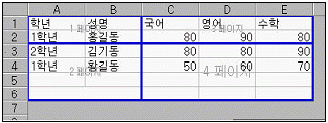
- [보기]-[페이지 나누어 보기]를 선택한다.
- [삽입]-[페이지 나누기]를 선택한다.
- [창]-[나누기]를 선택한다.
- [파일]-[페이지 설정]을 선택한다.
(정답률: 48%)
30. 다음의 4가지 아이콘은 지도 차트를 만들 때 Microsoft Map 제어판의 차트 서식에서 볼 수 있는 것들이다. 4가지 아이콘에 속하지 않는 것은?
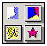
- 등급 차트
- 항목 구분 차트
- 밀도 차트
- 막대 차트
(정답률: 67%)
31. 아래의 그림에서 C16 셀에 배열식 {=AVERAGE(IF(C5:C14= "유럽","D5:D14))}을 입력하였다. 이의 정확한 설명으로 맞는 것은?
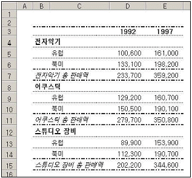
- C5:C14 범위에서 텍스트가 “유럽”인 셀을 찾아 D5:D14 범위에서 해당되는 셀의 평균을 계산합니다.
- C5:C14 범위에서 텍스트가 “유럽”인 셀을 찾아 D5:D14 범위에서 해당되는 셀의 합을 계산합니다.
- 유럽에 해당되는 모든 값들의 평균을 구합니다.
- 유럽에 해당되는 모든 값들의 합을 구합니다.
(정답률: 72%)
32. 아래의 그림과 같이 B2 셀 2,134 숫자의 오른쪽에 ‘원’을 표시하고 셀의 오른쪽 끝부분과 원 사이에 하나의 공백을 주려면 사용자 서식을 어떻게 지정해야 하는가?
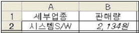
- #,##0"원"_
- #,##0"원"_-
- #,##0"원"-
- #,##0"원" -
(정답률: 54%)
33. 데이터베이스에서 판매수량의 평균보다 판매수량이 많은 자료를 필터링하기 위한 고급필터의 조건으로 옳은 것은?
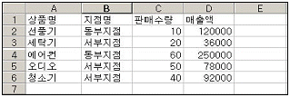
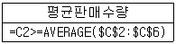
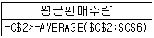
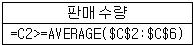
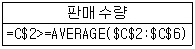
(정답률: 53%)
34. 아래의 차트에 대한 설명 중 올바르지 않은 것은?
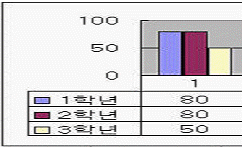
- [차트]-[원본 데이터]-[계열] 탭에서 3학년을 삭제하면 차트상의 계열은 삭제된다.
- 데이터 테이블 표시를 적용한 상태이다.
- 범례의 위치를 이동할 수 있다.
- 차트상에 표시된 데이터 테이블에 값을 입력하여 차트를 변화시킬 수 있다.
(정답률: 46%)
35. 다음 중 배열수식에 대한 설명으로 잘못된 것은?
- 수식 입력줄이 활성화되면 배열식의 { }는 나타나지 않는다.
- 결과가 여러 셀에 입력될 때는 입력될 셀을 범위로 설정한 후 수식을 입력한다.
- 수식의 앞뒤에 중괄호 { }가 입력되어 배열 수식임을 표시한다.
- 배열 수식에 사용된 배열의 행과 열의 개수는 같아야 하며 셀에 수식을 입력한 후 Ctrl+Enter 키를 눌러 입력한다.
(정답률: 73%)
36. 워크시트상에 천단위 수치를 많이 다루는 회사에서, 수치데이터를 입력할 때 5를 입력하면 셀에 5000으로 입력되게 하려고 한다. 다음 중 [도구]-[옵션]-[편집] 메뉴에서 어떤 항목을 선택하여야 하는가?
- 자동 % 입력사용
- 셀에서 직접편집
- 고정 소수점
- 셀 내용을 자동완성
(정답률: 62%)
37. 다음 매크로를 실행시키면 나타나는 현상은?
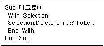
- 선택된 영역이 지워진다.
- Sheet1이 모두 왼쪽으로 정렬된다.
- 선택된 영역이 기본 형태로 바뀐다.
- 아무일도 일어나지 않는다.
(정답률: 64%)
38. 다음 시트의 A2:A5 셀에는 우편번호와 주소가 한꺼번에 입력되어 있다. 이것을 A열에는 우편번호, B열에는 주소를 구분하여 입력하려면 어떤 기능을 사용해야 하는가?
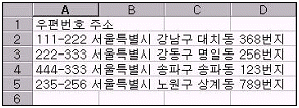
- 창 배열
- 창 나누기
- 텍스트 나누기
- 데이터 분석
(정답률: 69%)
39. 엑셀에서 사용할 수 없는 추세선은?
- 로그추세선
- 다항식추세선
- 이동평균추세선
- 누적평균추세선
(정답률: 44%)
40. 다음 중 공유 통합 문서에 대한 설명으로 틀린 것은?
- 공유 통합 문서는 사용자의 엑셀 버전과 관련이 있다.
- 공유 통합 문서를 네트워크 위치에 복사하면 다른 통합 문서의 연결이 유지된다.
- 다른 사용자가 해당 문서를 먼저 점유한 경우 다른 사용자는 편집이 불가능하다.
- 통합 문서의 공유상태를 해제하면 변경내용 설정이 취소되고 저장된 변경내용이 지워져 변경내용을 볼 수 없다.
(정답률: 54%)
3과목: 데이터베이스 일반
41. 다음 중 폼에 관한 설명으로 틀린 것은?
- 폼은 데이터의 입력, 편집 작업등을 위한 사용자와의 인터페이스로 테이블, 쿼리, SQL문을 원본으로 하여 작성한다.
- ‘캡션’ 속성을 이용하여 폼의 이름을 변경할 수 있다.
- ‘그림’ 속성을 이용하여 그림을 폼의 배경에 그림을 넣을 수 있다.
- 폼의 ‘기본 보기’ 속성에는 단일폼, 연속폼, 데이터시트가 있다.
(정답률: 51%)
42. 다음 중 엑세스의 파일 메뉴에서 외부 데이터 가져오기의 가져오기에 대하여 잘못 설명한 것은?
- 다른 액세스 데이터베이스의 테이블이나, 액세스 외의 데이터도 가져올 수 있다.
- 가져온 개체의 내용을 변경하면 외부의 데이터도 변경된다.
- 다른 액세스 데이터베이스의 폼, 보고서 등의 개체도 가져올 수 있다.
- 데이터를 가져와도 원본 테이블이나 파일은 변경되지 않는다.
(정답률: 62%)
43. 다음 중 액세스에서 보고서 작성시에 ‘그룹화’의 개념에 대한 설명으로 가장 옳지 않은 것은?
- 데이터를 특정 필드를 기준으로 데이터를 구분하여 표시하는 기능이다.
- 특정 필드를 기준으로 그룹화를 하는 경우 데이터는 그 필드를 기준으로 정렬되어 표시된다.
- 그룹에 대한 머리글이나 바닥글을 표시할 수 있다.
- 특정한 값을 갖는 데이터를 표시하지 않도록 설정할 수 있다.
(정답률: 51%)
44. 다음 중 액세스에서 매크로 작성에 대한 설명으로 옳지 않은 것은?
- 하나의 매크로 그룹에 여러 개의 매크로를 만들 수 있다.
- 하나의 매크로에 여러 개의 매크로함수를 지정할 수 있다.
- 모듈을 작성하면 이를 자동적으로 매크로로 변환할 수 있다.
- 매크로 실행시에 필요한 정보, 즉 인수를 지정할 수 있다.
(정답률: 51%)
45. 다음 중 데이터 조작어(DML : Data Manipulation Language)의 특징이 아닌 것은?
- 데이터 처리를 위하여 응용 프로그램과 DBMS 사이의 인터페이스 제공
- 데이터 처리를 위한 연산의 집합으로 데이터의 검색, 삽입, 삭제, 변경 연산 등이 있다.
- 테이블이나 필드와 같은 데이터 구조는 변경할 수 없다.
- 데이터 보안(Security), 무결성(Integrity), 회복(Recovery) 등에 관련된 사항을 정의한다.
(정답률: 60%)
46. 아래의 기본 테이블을 이용한 질의의 결과 레코드가 3개인 것은 무엇인가?
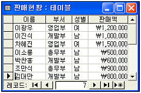
- Select 부서, SUM(판매액) AS 판매합계 From 판매현황 Group By 부서;
- Select 성별, AVG(판매액) AS 판매평균 From 판매현황 Group By 성별;
- Select 부서, COUNT(부서) AS 사원수 From 판매현황 Group By 부서 Having COUNT(부서) > 2;
- Select 부서, COUNT(판매액) AS 사원수 From 판매현황 Where 판매액 >=1000000 Group By 부서;
(정답률: 47%)
47. 입력마스크를 아래와 같이 정의하고 “sun”, “moon”의 데이터를 각각 입력하였을 때 입력 결과는?
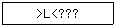
- SUN, MOON
- Sun, Moon
- sun, moon
- sUN, mOON
(정답률: 68%)
48. 다음 중 조인(join)에 관한 설명으로 옳지 않은 것은?
- 두 테이블의 조인에 사용되는 기준 필드의 데이터 형식은 동일하거나 호환되어야 한다.
- 조인을 이용하면 정규화를 통해 각 테이블로 분리된 데이터를 통합할 수 있다.
- 테이블을 조인하기 위해서는 조인되는 테이블의 필드수가 동일해야 한다.
- 조인이란 두 개 이상의 테이블을 연결하여 데이터를 검색하는 방법이다.
(정답률: 63%)
49. 다음 중 개체관계도(Entity Relationship Diagram)에 관한 설명으로 가장 거리가 먼 것은?
- 데이터를 시각적인 형태로 표현하는 데이터 모형(data model)이다.
- 실세계 데이터에 관해 일반사용자, 프로그래머, 관리자 등의 서로 다른 인식을 하나로 통합하기 위해 설계한다.
- 개체, 개체타입, 관계, 속성 등으로 표현한다.
- 관계형 데이터베이스에 종속적인 형태로 데이터를 표현하기 위해서 사용한다.
(정답률: 52%)
50. 직원(사원번호, 부서명, 이름, 나이, 주소, 급여)의 테이블에서 급여가 많은 것부터 내림차순으로 정열하고 급여가 동일한 경우 이름을 가나다순으로 출력하는 질의문으로 옳은 것은?
- select * from 직원 order by 급여 , 이름 desc
- select * from 직원 order by 급여 asc , 이름 desc
- select * from 직원 order by 급여 desc , 이름
- select * from 직원 order by 급여 descend , 이름 ascend
(정답률: 55%)
51. 다음 중 보고서와 관련된 내용을 설명한 것 중 틀린 것은?
- 보고서를 이용하면 분기별 결산보고서나 영업실적 같은 보고서를 작성할 수 있다.
- 그룹 머리글/바닥글은 보고서를 그룹으로 묶은 경우에 표시되며 그룹의 이름, 그룹별 요약정보를 표시하기 위한 구역이다.
- 보고서를 이용하여 주소레이블, 우편엽서 레이블, 업무양식, 차트를 작성할 수 있다.
- 보고서 바닥글은 인쇄할 때 보고서의 맨 마지막 쪽의 페이지 바닥글이 인쇄된 다음에 단 한번 인쇄된다.
(정답률: 65%)
52. 다음 중 자동보고서에 대한 설명으로 가장 옳지 않은 것은?
- 단일 테이블이나 단일 쿼리를 이용하여 빠른 시간에 간단한 보고서를 만드는데 적합하다.
- 자동보고서에는 컬럼 형식과 탭 형식이 있다.
- 자동보고서를 만들 때에는 테이블이나 쿼리를 지정하여야 한다.
- 자동보고서로 작성된 보고서는 사용자가 수정할 수 없다.
(정답률: 70%)
53. 폼에서 적은 공간을 차지하면서 데이터 입력이나 검색에 유용하게 사용할 수 있으며 목록의 값과 일치하는 문자열만 입력하도록 제어할 수 있는 것은?
- 도구상자
- 콤보상자
- 입력상자
- 개체상자
(정답률: 58%)
54. 다음 중 지정한 횟수만큼 명령 코드를 반복하는 비주얼베이직 제어문은 무엇인가?
- If ~ Then ~ Else ~ End If
- Select Case ~ End Select
- For ~ Next
- Do ~ Loop
(정답률: 45%)
55. 다음 중 폼이나 보고서에서 컨트롤을 편집하는 방법에 관한 설명으로 가장 적절하지 않은 것은?
- 크기를 조정하려면 해당 컨트롤을 선택하고 크기 조정 핸들을 끌어서 컨트롤을 원하는 크기로 만든다.
- 위치를 변경하려면 해당 컨트롤을 선택한 후 컨트롤의 가장자리에 마우스를 놓으면 마우스 포인터가 손바닥 모양으로 변한다. 이때 컨트롤을 마우스로 끌어 원하는 위치에 놓는다.
- 컨트롤을 삭제하려면 해당 컨트롤을 선택하고 <Delete> 키를 누른다. 이때 컨트롤에 이름표가 붙어있으면 이름표도 함께 삭제된다.
- 컨트롤 위치를 약간 조정하는 경우 <Shift> 키를 누른 상태에서 화살표 키를 누른다.
(정답률: 56%)
56. 다음은 보고서의 그룹화 수준이 지정된 컨트롤의 속성 중 [데이터]-[누적총계]에 대한 설명이다. 가장 적절하지 않은 것은?
- 페이지별로 특정 필드의 값에 대한 누계를 계산하여 표시
- 아니오(기본값) : 현재 레코드의 원본으로 사용하는 필드의 데이터를 표시
- 그룹 : 그룹 수준이 같은 값들의 누적 총계를 다른 그룹 수준이 나타날 때까지만 값을 더해서 표시
- 모두 : 값의 누적 총계를 보고서 끝날 때까지 더해서 표시
(정답률: 38%)
57. 다음 중 테이블을 데이터시트 형태로 열었을 때의 메뉴 항목에 대한 설명으로 가장 옳지 않은 것은
- 찾기 : 데이터시트 전체 또는 특정 필드의 데이터에서 원하는 문자열을 찾음
- 내보내기 : 테이블을 다른 엑세스 데이터베이스나 다른 파일형식으로 출력
- 디자인 보기 : 이 테이블과 다른 테이블과의 관계를 도형의 형태로 표시하고 수정
- 바꾸기 : 검색한 문자열을 다른 문자열로 바꾸는 것
(정답률: 62%)
58. 다음 중 UNION 질의에 대한 설명으로 가장 적합한 것은?
- 실행할 때 레코드 검색 조건이나 필드에 삽입할 값과 같은 정보를 입력할 수 있는 대화상자를 표시하는 질의이다
- 레코드의 합계, 평균, 개수, 기타 합계 형식을 계산한 다음, 데이터시트의 왼쪽 아래와 위쪽에 두 그룹으로 결과를 표시하는 질의이다.
- 스프레드시트에서의 피벗 테이블과 흡사하다
- 두 개 이상의 테이블이나 질의에서 대응되는 필드들을 결합하여 하나의 논리적인 테이블을 만드는 질의이다.
(정답률: 63%)
59. 다음 중 인덱스를 설정할 수 있는 필드의 데이터 형식으로 가장 거리가 먼 것은?
- 논리형(예/아니오)
- 메모
- 숫자
- 텍스트
(정답률: 54%)
60. 다음 중 액세스에서 사용하는 컨트롤 중에서 일대다(1:M)의 관계를 갖는 데이터의 입력이나 조회하는 경우에 가장 유용한 것은?
- 탭 컨트롤
- 하위 폼 컨트롤
- 목록상자
- 옵션그룹
(정답률: 65%)